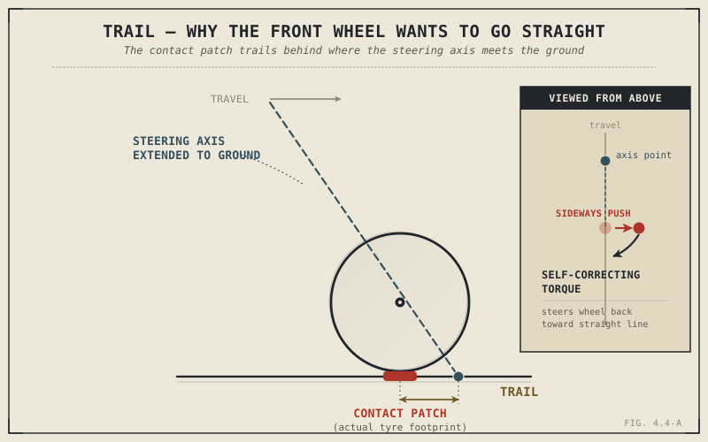

Push a shopping cart and give one of its front casters a light sideways nudge. It doesn't stay knocked sideways — it swivels back to trail obediently behind its own pivot, straightening itself out without anyone touching it. A motorcycle's front wheel does something remarkably similar, for almost exactly the same geometric reason, and it's the actual mechanical answer to a promise this book made all the way back in Chapter 1.2: that a rolling motorcycle stabilizes itself in ways a stationary one simply can't.
Chapter 4.3 introduced steering head angle and fork offset as two separate numbers, deliberately withholding what they actually produce together. This chapter combines them into trail, and shows that trail — not rake alone — is the single measurement most directly responsible for how a motorcycle's front end behaves, both in a straight line and while turning.
What Trail Actually Is
Imagine extending the steering axis — the angled line running through the steering head that Chapter 4.3 described — straight down until it touches the ground. That point rarely lines up directly beneath the front tyre's actual contact patch. Trail is the horizontal distance between those two points: where the steering axis would touch the ground, and where the tyre actually does.
A more laid-back steering head angle, combined with the front wheel's radius, pushes that steering-axis ground point further forward, ahead of the contact patch, increasing trail. Fork offset works the opposite way: more forward offset pulls the actual contact patch closer to that axis point, reducing trail for a given head angle. This is exactly the interaction Chapter 4.3 promised — two bikes sharing an identical steering head angle can still produce very different trail figures, simply by using different fork offsets, which is precisely why rake alone was never the whole story.
Why Trail Makes a Motorcycle Self-Correct
Here's the mechanism, and it's the same one at work in that shopping cart caster. Because the contact patch sits behind where the steering axis meets the ground, any sideways push on the front tyre — a gust of wind, a small disturbance, the bike beginning to lean off its intended line — creates a torque around the steering axis, and that torque acts specifically to steer the wheel back into alignment with the direction the bike is actually travelling. The wheel isn't being consciously steered by anyone in this moment; the geometry itself is doing the correcting, purely because trail places the contact patch in a position where straight-line travel becomes the direction of least resistance.
This is the literal mechanical answer Chapter 1.2 owed you when it first said a rolling motorcycle "stabilizes itself in ways a stationary one can't." Trail is the primary geometric contributor to that self-righting tendency — not the only one, since Chapter 4.6's gyroscopic effects and Chapter 4.5's countersteering dynamics both play a role too, but trail is doing an enormous share of the quiet, constant self-correction happening every second a motorcycle is upright and rolling.
A motorcycle doesn't stay balanced while moving because a rider is constantly steering it upright. Trail places the front contact patch exactly where straight-line travel becomes the path of least resistance — the geometry itself is doing much of the correcting, all the time, without being asked.

A steering axis extended to the ground, shown trailing ahead of the actual front tyre contact patch, with a sideways disturbance force generating a self-correcting torque back toward straight-line travel.
More Trail, Less Trail: The Real Trade-Off
More trail produces a stronger self-centering effect and greater stability at speed, which is exactly why touring and cruiser motorcycles, built for relaxed, confident straight-line manners, tend to run more trail. But that same strong self-centering force has to be actively overcome every time the rider wants to turn, which makes steering feel heavier and less immediate — the front end resists changing direction precisely because its geometry wants to hold a straight line so effectively. Less trail reduces that resisting force, producing the light, eager, quick-turning steering feel sport-oriented motorcycles are built around, at the cost of some of that high-speed self-correcting stability, which is part of why a lightly-trailed sportbike can feel comparatively nervous or twitchy at sustained high speed compared to a more relaxed touring geometry.
This is the same kind of trade-off Chapter 2.8 described for bore and stroke, and Chapter 2.11 described for engine layout — no single trail figure is correct in the abstract, only correct relative to whether a motorcycle is built to turn eagerly or hold a line confidently.
A Common Misconception, Cleared Up Early
It's extremely common to hear rake and trail used almost interchangeably, as though a bike's rake figure alone tells you how it will steer. Chapter 4.3 already flagged the problem, and this chapter has now shown exactly why: rake, or steering head angle, is only one of trail's two inputs, alongside fork offset. Trail, not rake by itself, is the number actually responsible for the self-centering force and steering effort this chapter has described — two bikes with identical rake and different offset can steer completely differently, and quoting rake alone, the way Chapter 1.6 warned against quoting any single spec in isolation, misses the number that actually matters most.
Where This Leads
This chapter explained the geometry's passive contribution to keeping a motorcycle upright and tracking straight. It hasn't yet explained how a rider actively makes the bike lean into a corner in the first place — the deliberate act of countersteering Chapter 1.2 and Chapter 1.4 both mentioned without fully unpacking. Chapter 4.5 covers that directly, showing how a rider's steering input works with, not against, the same trail geometry this chapter just explained.
Key Concepts to Remember
- Trail is the horizontal distance between where the steering axis meets the ground and where the front tyre's contact patch actually sits, and it's produced by steering head angle and fork offset acting together.
- Because the contact patch trails behind the steering axis's ground point, sideways disturbances generate a self-correcting torque that steers the wheel back toward straight-line travel — the literal mechanism behind Chapter 1.2's claim that a rolling motorcycle stabilizes itself.
- More trail produces stronger self-centering and greater straight-line stability at the cost of heavier, less immediate steering; less trail produces light, quick steering at the cost of some high-speed stability.
- Rake alone does not determine trail or steering feel — fork offset is an equal partner, and two motorcycles with identical rake can have meaningfully different trail and handling character.
Cross-References
| ← Ch. 1.2 | First claimed a rolling motorcycle stabilizes itself in ways a stationary one cannot; this chapter finally supplies the mechanical explanation behind that claim. |
| ← Ch. 4.3 | Introduced steering head angle and fork offset separately; this chapter combines them into trail and explains what that combination actually produces. |
| ← Ch. 2.8 / 2.11 | Both established trade-offs with no universally correct answer; this chapter applies that same pattern directly to trail. |
| ← Ch. 1.6 | Warned against judging anything from a single spec figure; this chapter shows why rake alone can never substitute for trail. |
| → Ch. 4.5 | Covers countersteering, the active rider input that works alongside the passive trail geometry described here. |
| → Ch. 4.6 | Covers gyroscopic effects, the other major contributor to a rolling motorcycle's steering and stability. |